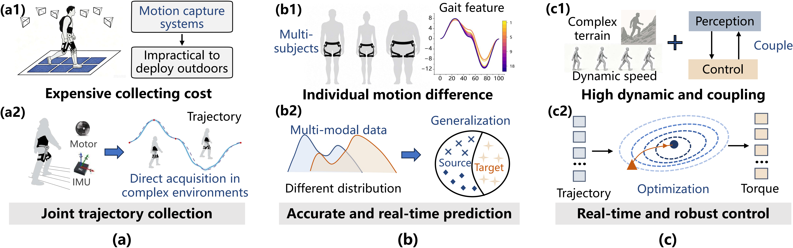
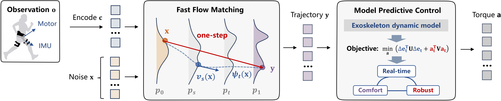
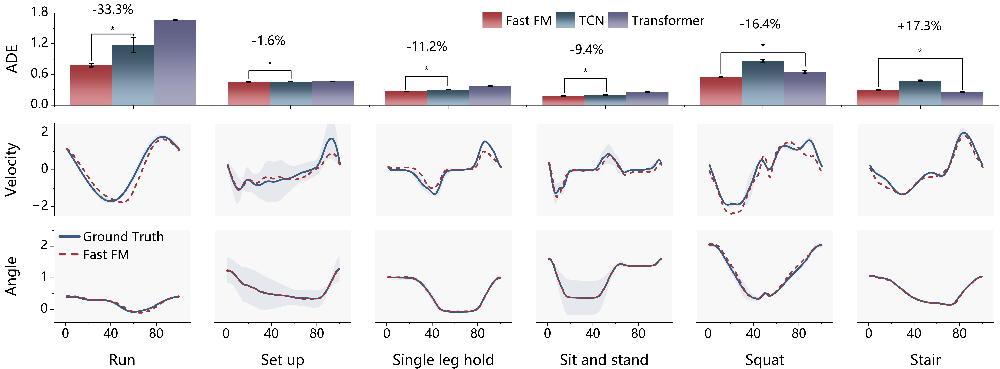
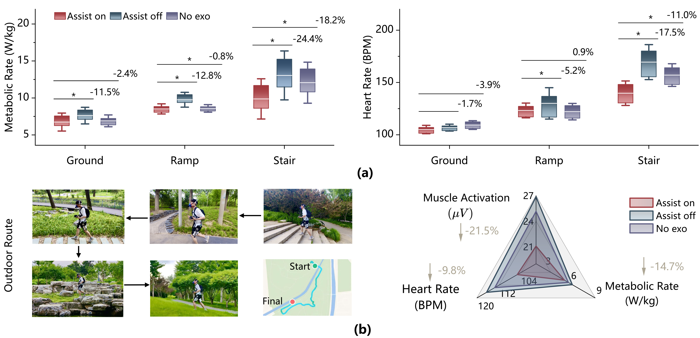

ExoTraj: A General Lower-limb Exoskeleton Assistance Policy for Complex Environments
Notice for Reviewers and Editors: Figure Display Clarification
Due to a technical rendering issue during proof generation, Fig. 7 (b) and Fig. 10 (b) in the manuscript proof are not displayed correctly. The correct original versions of the two figures are provided on this page, corresponding to Fig. 4 (b) and Fig. 5 (b), respectively. We apologize for any inconvenience this may cause.
Abstract
Adaptive torque prediction in dynamic exoskeleton scenarios requires expensive motion capture systems, which are infeasible in complex outdoor environments. Trajectory prediction has emerged as one of the effective approaches to address such an issue. However, the core challenges of exoskeleton trajectory prediction are twofold: 1) establishing the mapping from multi-modal features to trajectory information; 2) constructing the mapping from trajectory to torque. For the former, most existing methods perform only single-step prediction in dynamic scenarios and neglect inter-subject trajectory variability, thereby limiting the trajectory optimization space and prediction generalization. To address this, this paper proposes a fast flow matching (FM) method that enables accurate trajectory prediction and better generalization with accelerated inference for real-time performance, where trajectory generation errors and encoded observations are used to guide the training direction. For the second challenge, due to the high dynamics of the human-robot system and the strong coupling between perception and control, simple control methods struggle to achieve efficient assistance based on the predicted trajectory. This paper utilizes model predictive control (MPC) and designs a novel optimization objective to optimize torque, ensuring the exoskeleton achieves comfortable and robust assistance. By integrating the above two components, the unified policy, denoted as ExoTraj, is developed to enable adaptive assistance in complex outdoor scenarios without high data acquisition cost. Experimental results show that compared to traditional methods, ExoTraj reduces cross-subject prediction error by 14.0% during the online phase and maintains robustness against external noise. Relative to the zero torque condition, ExoTraj decreases metabolic rate by 11.5%-24.4%, heart rate by 1.7%-19.5%, and peak muscle activation levels by 10.9%-41.3%, respectively. This progress facilitates the deployment of exoskeletons toward viable community-wide adoption.
1. Problem Formulation

Figure 1: Schematic overview of problems and solutions for exoskeleton assistance in complex environments. (a) shows that outdoor motion-capture-based data acquisition is cost-prohibitive and infeasible, whereas direct trajectory measurements are readily obtainable. (b) indicates that substantial inter-subject motor variability demands effective fusion of multi-distribution data for real-time, precise cross-subject and cross-task trajectory prediction. (c) reveals that human-exoskeleton systems are highly dynamic with coupled perception and control, calling for an efficient, robust, and real-time optimization scheme to ensure assistance performance.
2. Framework of ExoTraj Policy

Figure 2: The hierarchical framework of assistance policy ExoTraj: i) the high-level controller maps from multi-modal features to trajectory; ii) the low-level controller maps from trajectory to torque. The process begins by encoding the observation to guide the learning of the velocity field of flow matching, and the one-step iteration enables the rapid generation of joint trajectories. Subsequently, a model predictive control scheme is employed to optimize the motor torque output for efficient assistance. Ultimately, this pipeline ensures the delivery of safe and comfortable assistance for complex outdoor environments.
3. Experimental Results
3.1 Prediction Performance

Figure 3: Comparison of online trajectory prediction among Fast FM, TCN, and Transformer for six activities: running, obstacle crossing, leg swing pause, sit-to-stand, squatting, and stair climbing. For highly dynamic movements, the maximum prediction error (ADE) is reduced by up to 33.3% and 53.0% (run movement) compared with TCN and Transformer, respectively. The average error of fast FM is reduced by 21.7% and 18.6% for TCN and Transformer, respectively.
3.2 Optimization Performance

Figure 4: Torque optimization comparison results. (a) illustrates the torque optimization performance of the PID controller.When prediction deviation occurs, PID control is prone to oscillation, which impairs perception accuracy, further degrades assistance performance and leads to a vicious cycle. (b) compares the optimized torque profiles obtained via MPC optimization before and after injecting Gaussian noise into the predicted trajectories. Under external disturbance attacks, the MPC-optimized torque retains smoothness with favorable robustness.
3.3 Assistance Performance
